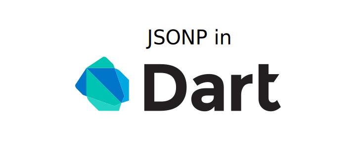

While working on a small demo in Dart, I required access to external web services to demonstrate a system’s flexibility. The objective was to obtain stock information given a company ticker symbol.
I came across several APIs including a list from programmableweb.com, google finance API, markit on demand API, and Yahoo! Finance webservice API. The programmableweb options seemed pretty lack luster, markit on demand’s Terms of use were prohibitive and with google’s offering deprecated that left me with Yahoo!.
The following will explain why I chose JSONP as a solution to this problem along with how to accomplish the task entirely through Dart with no external JavaScript.
Why use JSONP?
I started to look at Yahoo! and was surprised to find little to no documentation on their webservices API. In fact the link I chose to reference the API above was from stackoverflow (always a useful resource). The example given was enough for me to gather the data I required, but now I needed to know how I must request it.
Verifying CORS compliance
I first needed to check if the API was CORS compliant. One of the constraints of the project was that I couldn’t use a proxy server to make the cross domain requests so my options were limited to what I could do in the browser.
One option to verify compliance is to use the handy utility curl as described here. On OS X curl is installed by default. If your Unix flavor doesn’t have curl installed you can use your relevant package manager or visit the curl website for instructions, same goes for Windows minus the package manager of coarse.
You can easily check for compliance by running this snippet in the terminal (replace the googleapis url with your target url):
curl -H "Origin: http://mydomain.com" --head\
https://www.googleapis.com/discovery/v1/apis\?fields\=
If the site is compliant like the googleapis above you will see the Access-Control-Allow-Origin header in the response. I ran the test for Yahoo! to discover no CORS support.
If a web service is not CORS compliant the user agent will not allow you to make direct cross domain requests. You can always proxy behind a server that is not bound by the same safety net as the browser, but since this is not an option for my purpose the next logical fall back is the somewhat hacky approach known as JSONP.
Verifying JSONP compliance
JSONP (JSON with padding) is a technique that leverages the fact that script tags are allowed to request resource from different domains. It isn’t enough, however, to request JSON data directly via the script tag as the browser will simply throw a syntax error upon interpreting the raw JSON data as a block.
JSONP works by utilizing an agreed upon function that the server constructs a call to with the JSON data as a parameter instead of the usual naked JSON response. Once the script is downloaded and interpreted it is executed calling the client local function allowing it to parse the JSON data.
By convention the method name is normally passed to the server as a query parameter often named callback or jsonp. If you do not find API documentation it is worth trying a few variations. The output you receive should then look like a function invocation taking the JSON data as a parameter. Luckily Yahoo! used the fairly standard convention of callback so I had confirmation on my first try.
A word of caution
It is important to realize that you may expose your users to security vulnerabilities by using this approach if you do not trust the remote resource. A response could be constructed that would allow the injection of any arbitrary content into the site and bypass Same-origin policy. If you plan on utilizing any sensitive user information it would be wise to avoid this technique. This is why CORS was created after all.
Initialization in Dart
I normally prefer to begin a new project with an initial discovery phase. In this case I wanted to see if there was a native Dart solution to JSONP or simply a common pattern.
I came across Seth Ladd’s blog post on the subject. If you are looking for information on something in Dart it is actually a pretty sure bet you will land on one of the many bread crumbs Seth has left behind. There is also a decent chance, however, that there are breaking API changes since the solution you have found. The post was dated March 16, 2012 so it was no surprise to me that some of the syntax was no longer relevant.
The solution also proposed a combination of JavaScript and Dart, which was not in the scope of my project. I instead came up with a more updated approach that also indirectly utilizes JavaScript on the page via Dart.
Update:
I came across a simpler approach to combine the two steps below (Register the listener and Creating the callback) if you are using dart:js. I will keep the existing solution here as well since it is still relevant as a fallback. If you like you can skip to The dart:js Approach.
Register the listener
The first part of the initialization portion of my approach consists of registering for the window message event:
window.onMessage.listen(dataReceived);
At the time of my writing the dart:html library exposes the onMessage property of the window object. The property returns a Stream<MessageEvent> object which you can register to listen to events with a callback that receives a MessageEvent. We will look at the dataReceived method in the section Handle The Response below.
Creating the callback
The last part of initialization is to create the callback function in JavaScript. A simple approach to inject the method and avoid name mangling is to dynamically create a script tag and set the innerHtml directly within Dart.
1 | void _createScriptTag() |
The contents of requestString are fairly simple. I use the triple quoted string notation in Dart to avoid escaping special characters. I tag the parameter value with a target identifier to allow this approach to be shared by other portions of the logic (you can obviously leave this out or come up with a more fully qualified name). Finally I use window.postMessage to invoke the previously registered dataReceived method. The script is ready as soon as it is added to the DOM and interpreted by the user agent.
The dart:js Approach
As mentioned above, there is a simpler and more elegant way to create the callback using dart:js. You can avoid the need to use messages and instead write the following callback in dart directly:
1 | context['callbackForJsonpApi'] = (JsObject jsonData) |
Make The Request
Making the request is simple and uses a similar technique as before, only this time I set the src attribute of the script tag:
1 | void getStockQuote(String tickerId) |
As soon as this is added to the DOM the request is made bypassing the Same-origin policy restriction. You could also recycle the ScriptElement to make future requests rather then creating a new one each time.
Handle The Response
The last thing we need to do is create the dataReceived method in Dart to handle the response. This logic can be as simple or complex as the situation requires. The MessageEvent payload is on the data property and can be cast to String and handled however you desire. I had mentioned previously that I tagged the payload with target so you may end up switching on this as well, provided it doesn’t clash with the API you use in which case you can more fully qualify the value.
1 | void dataReceived(MessageEvent e) |
Conclusion
There are many ways to accomplish cross domain requests depending on your requirements. I hope you have found this information useful in utilizing JSONP as a solution natively in Dart.